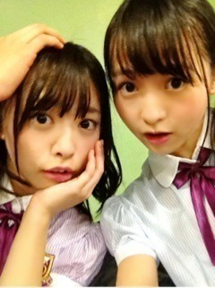
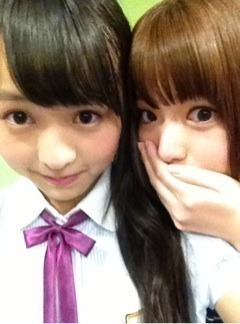

| 2012/11 02 Fri | 278回目*marika |
いつも読んでくださってる方、
初めて読んでくださった方、
コメントしてくださった方、
ありがとうございます！
＼前髪割れた／

佛教大学ライブ♪
アンコール2曲も入れて全部で11曲！
盛りだくさんでしたー
楽しかった
 ‼
‼
‼
こんなに盛り上がると
思わなかったのでびっくりしました。
佛教大学のみなさん、
乃木坂familyのみなさん、
ありがとうございました


終わったあと、
みんなでラーメン食べたよー
いや、戦ってきたよーラーメンと。
すすれないよーくそー
チャーハンの取り皿を若月が
持ってきてくれた。
れいか 普通の取り皿
ねね 普通の取り皿
若月 普通の取り皿
まりか ハム太郎のお皿
...ん？ハム...⁇
メンバーからも
おこちゃま扱いされてまっくだ！
まりっかあ
 美味しかった♪
美味しかった♪
美味しかった♪
**********
 メガネかけたまま、眠ったり、
メガネかけたまま、眠ったり、
顔洗ったりしたことあるでしょ？
 ないよ
ないよ
 コンピューターいじるの
コンピューターいじるの
すきですか？
んー...機械苦手です。
今年お祭りどのくらい
行きましたか？
イベントはいっぱい！
あとは友達と一回行ったくらいかな。
モンブランは好き？
すきだよー！
*********

さゆりん！
.........
ホテルはゆったんと一緒
でへ
でへ
明日もライブ楽しみです！
ではおやすみなさい
まりか
コメント(209)
2012/11/02 23:48